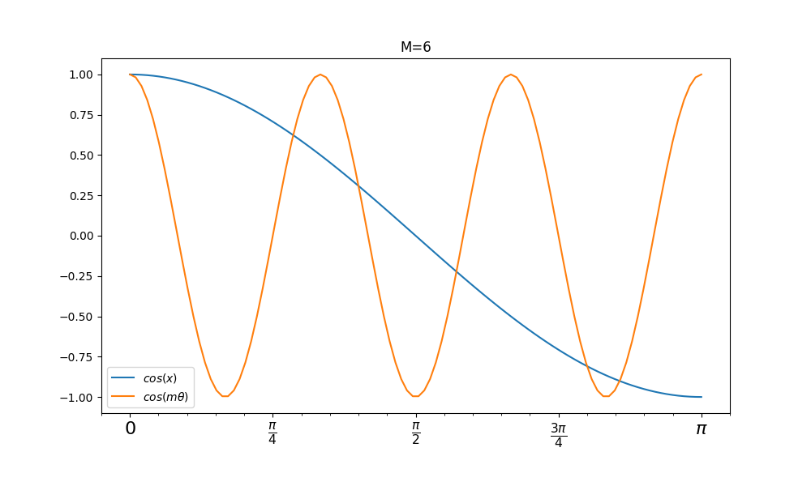
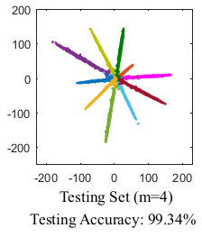
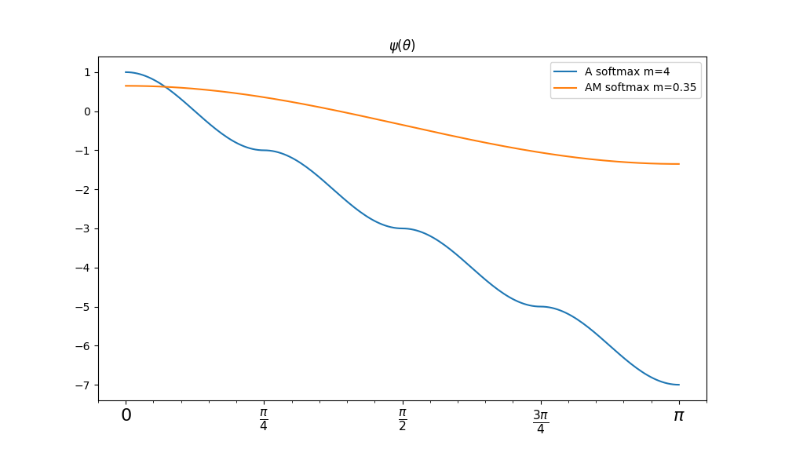

L softmx -> A softmx -> AM softmax
本篇文章是对Large Margin Softmax loss,Angular Margin to Softmax Loss,Additive Margin Softmax Loss的学习记录。公式我尽量按照原文来写，并加入一点注释。
原始的softmax
首先定义第i个输入特征\(x_i\)和标签\(y_i\)。传统的softmax定义为：
\[ \begin{aligned} Loss=\frac{1}{N}\sum_i Loss_i= -\frac{1}{N}log(P_{y_i})= -\frac{1}{N}log(\frac{e^{f_{y_i}}}{\sum_j e^{f_j}}) \end{aligned} \]
注： \(f_{y_i}\)应该是指的是输出中对应label分类的那个位置，\(f_j\)对应第\(j\)个元素(\(j \in [1,K)\),\(K\)对应类别数量)的输出.\(N\)为输入样本数量.
因为在softmax loss中最后都使用全连接层来实现分类,所以\(f_{y_i}=\boldsymbol{W}_{y_i}^Tx_i\),\(\boldsymbol{W}_{y_i}\)是\(\boldsymbol{W}\)的第\(y_i\)列.(一般来说是全连接层还需要加上偏置,但是为了公式推导的方便这里不加,在实际中直接加偏置即可).再因为这里的\(f_j\)是\(\boldsymbol{W}_j\)和\(x_i\)的內积,所以\(f_j=\boldsymbol{W}_jx_i=\parallel \boldsymbol{W}_j\parallel \parallel x_i\parallel cos(\theta_j)\),\(\theta_j(0\leq\theta_j\leq\pi)\)是向量\(\boldsymbol{W}_i\)和\(x_i\)的夹角.最终损失函数定义为:
\[ \begin{aligned} Loss_i=-log(\frac{e^{\parallel \boldsymbol{W}_{j_i}\parallel \parallel x_i\parallel cos(\theta_{y_i})}}{\sum_j e^{\parallel \boldsymbol{W}_j\parallel \parallel x_i\parallel cos(\theta_j)}}) \end{aligned} \]
Large-Margin Softmax Loss
动机
考虑一个二分类的softmax loss,它的目标是使\(\boldsymbol{W}_{1}^Tx>\boldsymbol{W}_{1}^Tx\)或\(\parallel \boldsymbol{W}_{1}\parallel \parallel x\parallel cos(\theta_{1})>\parallel \boldsymbol{W}_{2}\parallel \parallel x\parallel cos(\theta_{2})\)来正确分类\(x\). 现在作者想到构建一个决策余量来更加严格地约束决策间距,所以要求\(\parallel \boldsymbol{W}_{1}\parallel \parallel x\parallel cos(m\theta_{1})>\parallel \boldsymbol{W}_{2}\parallel \parallel x\parallel cos(\theta_{2}) (0\leq \theta_1 \leq \frac{\pi}{m})\),\(m\)是一个正整数.从而使以下不等式成立: \[ \begin{aligned}
\parallel \boldsymbol{W}_{1}\parallel \parallel x\parallel cos(\theta_{1})\geq\parallel \boldsymbol{W}_{1}\parallel \parallel x\parallel cos(m\theta_{1})>\parallel \boldsymbol{W}_{2}\parallel \parallel x\parallel cos(\theta_{2})
\end{aligned} \]
这样对学习\(\boldsymbol{W}_1\boldsymbol{W}_2\)都提出了更高的要求.
注: 实际上这里是对类内的间距有个限制,假设\(m=6\)时,\(cos(\theta)\geq cos(m\theta)\)的条件下,\(\theta\)被压缩到一个特定的范围中,如下图所示,只有蓝线大于红线的时候的\(\theta\)取值才是符合条件的,这相当于变相的增加了\(\boldsymbol{W}_1\)与\(x\)的方向限制,也就是学习难度更大,类内间距更小.不过我感觉还得限制一下\(\theta\)的范围,因为符合条件的\(\theta\)范围并不止一个:

定义
下面给出L softmax的定义:
\[ \begin{align} Loss_{i}=-\log \left(\frac{e^{\left\|\boldsymbol{W}_{y_{i}}\right\| \boldsymbol{x}_{i} \| \psi\left(\theta_{y_{i}}\right)}}{e^{\left\|\boldsymbol{W}_{y_{i}}\right\| \boldsymbol{x}_{i} \| \psi\left(\theta_{y_{i}}\right)}+\sum_{j \neq y_{i}} e^{\left\|\boldsymbol{W}_{j}\right\|\left\|\boldsymbol{x}_{i}\right\| \cos \left(\theta_{j}\right)} )}\right) \end{align} \]
并:
\[ \begin{align} \psi(\theta)=\left\{\begin{array}{l}{\cos (m \theta), \quad 0 \leq \theta \leq \frac{\pi}{m}} \\ {\mathcal{D}(\theta), \quad \frac{\pi}{m}<\theta \leq \pi}\end{array}\right. \end{align} \]
\(m\)是与分类边界密切相关的参数,\(m\)越大分类学习越难.同时\(\mathcal{D}(\theta)\)需要是一个单调递增函数,且\(\mathcal{D}(\frac{\pi}{m})==cas(\frac{\pi}{m})\)(保证他是连续函数才可以求导).下图显示了不同\(\theta\)值下的两个损失函数的结果,夹角\(\theta\)越大L softmax loss越大.

为了简单起见,文章中特化了\(\psi(\theta)\)函数为: \[ \begin{align} \psi(\theta)=(-1)^{k} \cos (m \theta)-2 k, \quad \theta \in\left[\frac{k \pi}{m}, \frac{(k+1) \pi}{m}\right] \end{align} \]
其中\(k\in[0,m-1]\)且为正整数.
在前向传播和反向传播中作者将\(cos(\theta_j)\)替换成\(\frac{\boldsymbol{W}_{j}^{T} \boldsymbol{x}_{i}}{\left\|\boldsymbol{W}_{j}\right\|\left\|\boldsymbol{x}_{i}\right\|}\),\(cos(m\theta_{y_i})\)替换为: \[ \begin{align} \begin{aligned} \cos \left(m \theta_{y_{i}}\right) &=C_{m}^{0} \cos ^{m}\left(\theta_{y_{i}}\right)-C_{m}^{2} \cos ^{m-2}\left(\theta_{y_{i}}\right)\left(1-\cos ^{2}\left(\theta_{y_{i}}\right)\right) \\ &+C_{m}^{4} \cos ^{m-4}\left(\theta_{y_{i}}\right)\left(1-\cos ^{2}\left(\theta_{y_{i}}\right)\right)^{2}+\cdots \\ &(-1)^{n} C_{m}^{2 n} \cos ^{m-2 n}\left(\theta_{y_{y_{i}}}\right)\left(1-\cos ^{2}\left(\theta_{y_{i}}\right)\right)^{n}+\cdots \end{aligned} \end{align} \]
\(n\)是正整数且\(2n\leq m\).然后将这些函数带入L softmax loss公式中计算即可拿来做损失.但是这个公式还是太长了,所以我决定还是不用这个损失函数.
A softmax
这里还是介绍传统的softmax,这里就不赘述了.
modified softmax
这个就是作者让传统的softmax的权重\(\boldsymbol{W}\)归一化:\(\parallel \boldsymbol{W}_j\parallel =1\)(必须是没有bias的),得到了modified softmax loss: \[ \begin{align}
Loss=\frac{1}{N} \sum_{i}-\log \left(\frac{e^{\left\|\boldsymbol{x}_{i}\right\| \cos \left(\theta_{y_{i}, i}\right)}}{\sum_{j} e^{\left\|\boldsymbol{x}_{i}\right\| \cos \left(\theta_{j, i}\right)}}\right)
\end{align}
\]
当然我不知道这个归一化有什么好处,从作者给出的结果上来看准确率提高了1%.
Angular Margin to Softmax Loss
对于上面的modified softmax loss在二分类问题中,当\(\cos(\theta_1)>\cos(\theta_2)\)可以确定类别为1,但是两个类别的决策面是\(\cos(\theta_1)=\cos(\theta_2)\),这样的决策面间隔太小,为了让决策面之间的间距更大一些,作者提出做两个决策面:
类别1的决策面为\(\cos(m\theta_1)=\cos(\theta_2)\); 类别2的决策面为\(\cos(\theta_1)=\cos(m\theta_2)\); 其中\(m\geq2,m\in N\),\(m\)取整数可以利用倍角公式;
这样的话,也就是说预测出来的\(\boldsymbol{x}\)与他对应的类的夹角必须要小于他与其他类最小的夹角的\(m\)倍,比如2分类问题,其实就有三个决策面,中间两个决策面之间的就是决策间距.然后推导出A softmax loss: \[ \begin{aligned}
Loss = \frac{1}{N}\sum_i-\log(\frac{\exp(\|x_i\|\cos(m\theta_{yi,i}))}{\exp(\|x_i\|\cos(m\theta_{yi,i}))+\sum_{j\neq y_i}\exp(\|x_i\|\cos(\theta_{j,i}))})
\end{aligned} \]
其中\(\theta_{yi,i}\in[0, \frac{\pi}{m}]\),这就是因为\(cos\)的性质决定,我在上面也提到了,当\(m\theta_{yi,i}>\pi\)时,会使得\(m\theta_{yi,i}>\theta_{j,i}\ ,j\neq y_i\),但\(cos(m\theta_{1})>cos(\theta_2)\)也会成立,这就与之前的假设相反.
为了避免\(cos\)的问题,就设计 \[ \begin{aligned} \psi(\theta_{y_i,i})=(-1)^k\cos(m\theta_{y_i,i})-2k\ \ \ \theta_{y_i,i}\in[\frac{k\pi}{m},\frac{(k+1)\pi}{m}],且k\in[0,m-1] \end{aligned}\]
来代替.这样使得\(\psi\)随着\(\theta_{y_i,i}\)单调递减,如果\(m\theta_{y_i,i}>\theta_{j,i},j\neq y_i\)那么必有\(\psi(\theta_{y_i,i})<\cos(\theta_{j,i})\),这里我们看一下\(\psi(\theta)\)函数的图像(完全符合单独递减的要求,并且是连续函数可导):

最终得出损失函数如下: \[ \begin{aligned} L_{ang} = \frac{1}{N}\sum_i-\log(\frac{\exp(\|x_i\|\psi(\theta_{yi,i}))}{\exp(\|x_i\|\psi(\theta_{yi,i}))+\sum_{j\neq y_i}\exp(\|x_i\|\cos(\theta_{j,i}))}) \end{aligned} \]
这里对比一下三个loss的不同决策界:
| 损失函数 | 决策面 |
|---|---|
| Softmax Loss | \(\boldsymbol{W}_1-\boldsymbol{W}_2+b1-b2=0\) |
| Modified Softmax Loss | \(\parallel\boldsymbol{x}(cos(\theta_1)-cos(\theta_2))\parallel\)=0 |
| A Softmax Loss | \[\begin{aligned} \parallel\boldsymbol{x}\parallel(cos(m\theta_1)-cos(\theta_2)=0\ \text{for class 1}\\ \parallel\boldsymbol{x}\parallel(cos(\theta_1)-cos(m\theta_2)=0\ \text{for class 2} \end{aligned} \] |
注: 写到这里我发现这tm就是一个作者的两篇文章,到这里A softmax还是与L softmax的区别就在于是否对\(\parallel\boldsymbol{W}\parallel\)进行归一化.这样的话对于分类来说可以观察到A softmax的分类结果都是长度会趋近相同,L softmax的分类长度会不相同.
| A softmax | L softmax |
|---|---|
 |
 |
Additive Margin Softmax
这里这个作者在2018年发表的文章,这里也一并学习了.这个是效果好并且实现简单的一种方案.
定义
实际上看了上面的Loss函数,所有的变化点其实就在\(e^{?}\)做文章.这里首先替换了\(\psi(\theta)\)函数(\(m\)是偏移): \[ \begin{aligned}
\psi(\theta)=cos(\theta)-m
\end{aligned} \]
然后又把\(W,x\)都归一化: \[ \begin{aligned} Loss_i=-log(\frac{e^{\parallel \boldsymbol{W}_{j_i}\parallel \parallel x_i\parallel cos(\theta_{y_i})}}{\sum_j e^{\parallel \boldsymbol{W}_j\parallel \parallel x_i\parallel cos(\theta_j)}})\ \ \ \ \parallel\boldsymbol{W}\parallel=1,\parallel x\parallel=1 \end{aligned} \]
这样內积结果就是: \[ \begin{aligned} <\boldsymbol{W_{y_i}},x>=cos(\theta_{y_i}) \end{aligned} \]
接着再来一个偏移\(m,\ m>0\)与缩放因子\(s\),得到最后的损失函数: \[ \begin{aligned} Loss_i = - \log \frac{e^{s\cdot(\cos\theta_{y_i} -m)}}{e^{s\cdot (\cos\theta_{y_i} -m)}+\sum^c_{j=1,i\neq t} e^{s\cdot\cos\theta_j }} \end{aligned} \]
按照原论文,取\(m=0.35\),\(s=30\).然后就结束了… 😄
再补张图(AM softmax没有乘\(s\)): 
编程实现
因为A softmax loss是升级版,所以就实现这个.
A softmax loss
首先是几个代码要注意的点,\(cos(\theta)\)可以通过向量除计算,\(cos(m\theta)\)可以通过倍角公式计算.: \[ \begin{split} \cos \theta_{i,j} &= \frac{\vec{x_i}\cdot\vec{W_j}}{\|\vec{x_i}\|\cdot\|\vec{W_j}\|} \frac{\vec{x_i}\cdot\vec{W_{norm_j}}}{\|\vec{x_i}\|} \cr \cos 2\theta &= 2\cos^2 \theta -1 \cr \cos 3\theta &= 4\cos^2 \theta -3 \cos \theta \cr \cos 4\theta &= 8\cos^4 \theta -8\cos^2 \theta + 1 \cr \end{split} \]
然后还有\(k\)的取值,先利用\(sign\)函数判断\(cos(\theta)\)属于哪一个区间,再确定\(k\)的值: \[ \begin{aligned} sign_0&=sign(cos(\theta))\\ sign_3&=sign(cos(2\theta))*sign_0\\ sign_4&=2*sign_0+sign_3-3 \\ \psi(\theta)&=sign_3*cos(4\theta)+sign_4 \\ &=sign_3*(8\cos^4 \theta -8\cos^2 \theta + 1)+sign_4 \end{aligned} \]
下面是\(m=4\)时的\(Loss\)计算函数.
import tensorflow.python as tf
from tensorflow import contrib
def Angular_Softmax_Loss(embeddings, labels, margin=4):
"""
Note:(about the value of margin)
as for binary-class case, the minimal value of margin is 2+sqrt(3)
as for multi-class case, the minimal value of margin is 3
the value of margin proposed by the author of paper is 4.
here the margin value is 4.
"""
l = 0.
embeddings = tf.random_normal((2, 10))
labels = tf.convert_to_tensor([[1], [2]], dtype=tf.int64)
x_norm = tf.norm(embeddings, axis=1)
with tf.variable_scope("softmax"):
weights = tf.get_variable(name='embedding_weights',
shape=[embeddings.get_shape().as_list()[-1], 10],
initializer=contrib.layers.xavier_initializer())
W = tf.nn.l2_normalize(weights, axis=0)
# cacualting the cos value of angles between embeddings and W
orgina_logits = tf.matmul(embeddings, W)
N = embeddings.get_shape()[0] # get batch_size
single_sample_label_index = tf.concat([tf.constant(list(range(N)), tf.int64, shape=(N, 1)), labels], axis=1)
# N = 128, labels = [1,0,...,9]
# single_sample_label_index:
# [ [0,1],
# [1,0],
# ....
# [128,9]]
# 这里就是F_y_i,根据有目标的位置来选取需要计算的loss位置.
f_y_i = tf.gather_nd(orgina_logits, single_sample_label_index)
# NOTE 因为 \parallel W\parallel =1 所以 cos(theta)=f_y_i/x_norm
cos_theta = tf.div(f_y_i, x_norm)
cos_theta_2 = tf.pow(cos_theta, 2)
cos_theta_4 = tf.pow(cos_theta, 4)
sign0 = tf.sign(cos_theta)
sign3 = tf.multiply(tf.sign(2 * cos_theta_2 - 1), sign0)
sign4 = 2 * sign0 + sign3 - 3
result = sign3 * (8 * cos_theta_4 - 8 * cos_theta_2 + 1) + sign4
margin_logits = tf.multiply(result, x_norm)
f = 1.0 / (1.0 + l)
ff = 1.0 - f
combined_logits = tf.add(orgina_logits,
tf.scatter_nd(single_sample_label_index,
tf.subtract(margin_logits, f_y_i),
orgina_logits.get_shape()))
updated_logits = ff * orgina_logits + f * combined_logits
loss = tf.reduce_mean(tf.nn.sparse_softmax_cross_entropy_with_logits_v2(logits=updated_logits, labels=tf.reshape(labels, (-1,))))
pred_prob = tf.nn.softmax(logits=updated_logits)
return pred_prob, lossAdditive Margin Softmax
这个比前面那个简单多了:
from tensorflow.python import keras
from tensorflow.python.keras.models import Model
from tensorflow.python.keras.layers import *
import tensorflow.python.keras.backend as K
from tensorflow.python.keras.constraints import unit_norm
(train_x, train_y), (test_x, test_y) = keras.datasets.fashion_mnist.load_data()
train_x = K.reshape(train_x, (-1, 784))
train_y = keras.utils.to_categorical(train_y, 10)
model = keras.Sequential([Input(shape=(784,)),
Dense(512, keras.activations.relu),
Dense(256, keras.activations.relu),
Dense(128, keras.activations.relu),
Lambda(lambda x: K.l2_normalize(x, 1)),
Dense(10, use_bias=False, kernel_constraint=unit_norm())])
def am_softmax_loss(y_true, y_pred, scale=30, margin=0.35):
# NOTE 预测出来的x就是归一化后的,并且W也是归一化后的,所以y_pred就是cos(𝜃)
y_pred = (y_true * (y_pred - margin) + (1 - y_true) * y_pred) * scale
return K.categorical_crossentropy(y_true, y_pred, from_logits=True)
model.compile(loss=am_softmax_loss, optimizer=keras.optimizers.Adam(),
metrics=[keras.metrics.CategoricalAccuracy()])
model.fit(x=train_x, y=train_y, batch_size=128, epochs=5)对于人脸识别问题，还是需要稀疏版本的Additive Margin Softmax实现以节省显存，这里提供一个实现：
class Sparse_AmsoftmaxLoss(kls.Loss):
def __init__(self,
batch_size: int,
scale: int = 30,
margin: int = 0.35,
reduction='auto',
name=None):
""" sparse addivate margin softmax
Parameters
----------
scale : int, optional
by default 30
margin : int, optional
by default 0.35
"""
super().__init__(reduction=reduction, name=name)
self.scale = scale
self.margin = margin
self.batch_idxs = tf.expand_dims(tf.range(0, batch_size, dtype=tf.int32),
1) # shape [batch,1]
def call(self, y_true: tf.Tensor, y_pred: tf.Tensor) -> tf.Tensor:
""" loss calc
Parameters
----------
y_true : tf.Tensor
shape = [batch,1] type = tf.int32
y_pred : tf.Tensor
shape = [batch,class num] type = tf.float32
Returns
-------
tf.Tensor
loss
"""
idxs = tf.concat([self.batch_idxs, tf.cast(y_true, tf.int32)], 1)
y_true_pred = tf.gather_nd(y_pred, idxs)
y_true_pred = tf.expand_dims(y_true_pred, 1)
y_true_pred_margin = y_true_pred - self.margin
_Z = tf.concat([y_pred, y_true_pred_margin], 1)
_Z = _Z * self.scale
logZ = tf.math.reduce_logsumexp(_Z, 1, keepdims=True)
logZ = logZ + tf.math.log(1 - tf.math.exp(self.scale * y_true_pred - logZ))
return -y_true_pred_margin * self.scale + logZ稀疏版本的Additive Margin Softmax代码中最后两步的推导过程如下： \[
\begin{aligned}
\text{Let}\ \ p&=y_{pred}\\
log_Z&=\log\left[e^{s*p_0}+\ldots+e^{s*p_c}+\ldots+e^{s*p_{y_i}}+e^{s*(p_{y_i}-m)}\right]\\
log_Z&=log_Z+\log\left[1-e^{s*p_{y_i}-log_Z} \right]\\
&=log_Z+\log\left[1-\frac{e^{s*p_{y_i}}}{e^{log_Z}} \right]\\
&=log_Z+\log\left[1-\frac{e^{s*p_{y_i}}}{e^{\log\left[e^{s*p_0}+\ldots+e^{s*p_c}+\ldots+e^{s*p_{y_i}}+e^{s*(p_{y_i}-m)}\right]}} \right]\\
&=\log\left[e^{s*p_0}+\ldots+e^{s*p_c}+e^{s*(p_{y_i}-m)}\right]\\
\mathcal{L}&=-\log\left[\frac{e^{s*(p_{y_i}-m)}}{e^{s*p_0}+\ldots+e^{s*p_c}+e^{s*(p_{y_i}-m)}} \right]\\
&=-\log e^{s*(p_{y_i}-m)}+log_Z\\
&=-s*(p_{y_i}-m)+log_Z\\
\end{aligned}
\]
总结
看了三个文章,都是通过减小内类间距来达到效果.减小内类间距的途径都是构建\(\psi(\theta)\)代替\(cos(\theta)\),当然要保证\(\psi(\theta) < \cos\theta\).
之前的L softmax和A softmax为了保证\(\psi(\theta)=cos(m\theta) < \cos\theta\)还使用了分段函数,比较麻烦.然后AM softmax就比较简单粗暴了.